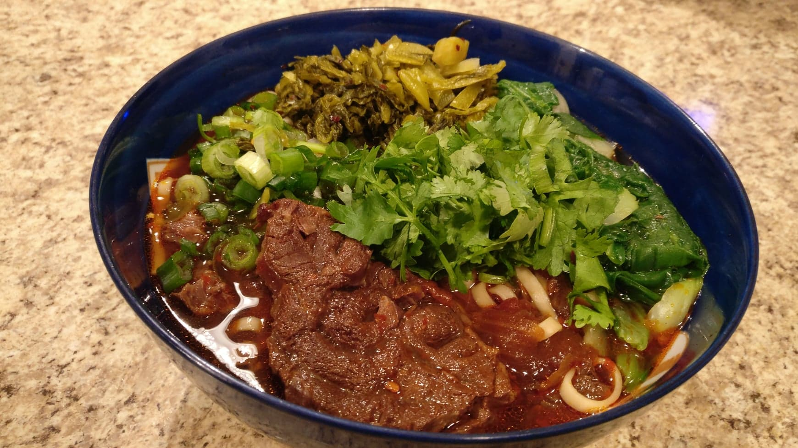

Taiwanese Beef Noodle Soup

Description
Taiwanese Beef noodle soup (TBNS) is a rich, heart-warming broth filled with tender melt-in-your-mouth beef, noodles, and typically some vegetables like bok choy. Often considered Taiwan's national dish, you can find variations of this dish all throughout Taiwan. Eating this dish always brings back fond memories of my childhood and takes me back home.
This is my personal recipe for TBNS utilizing an Instant Pot. With an Instant Pot, what would normally take hours of braising to create is reduced to an hour. Follow the recipe below and soon you can be enjoying this delicious dish too!
Ingredients
- Beef Shank - 2 lbs
- Tomatoes - 2
- Yellow Onion - 1
- Sliced Ginger - 1-2 inches
- Garlic - 6 cloves
- Rock Sugar - 1 Tbsp
- Star Anise - 2 pods
- Chile pepper (optional)- 1
- Spicy Bean Paste - 3 Tbsp
- Taiwanese spice bag
- Soy sauce - 1/2 cup
- Taiwanese Michiu Rice wine - 1/2 cup
- Dark Soy Sauce - 1/2 cup
- Neutral oil (e.g. Avocado oil) - 1-2 Tbsp
- White pepper - 1 tsp
- Green onions - 3 stalks cut into 2 inch segments
- Chopped Cilantro and Green Onions for garnish
- Choice of Chinese/Taiwanese dried noodles
- Choice of vegetables e.g. Bok Choy
Steps
- Boil beef for 3-5 minutes then remove and rinse clean to remove impurities.
- Put Instant Pot (IP) in sauté mode and add oil, ginger, garlic, onion, green onion stalks, and star anise. Stir fry for a few minutes.
- Add rock sugar and spicy bean paste to IP. Stir fry until sugar has melted.
- Add beef, tomatoes, both soy sauces, rice wine, and white pepper. Sauté for a minutes.
- Add boiling water and spice bag until meat is covered.
- Put IP on the Aromatic Meat Stew setting for 45 minutes. Natural Release for 20-30 minutes.
- Cook noodles according to package instructions.
- Blanch vegetables
- Assemble beef, noodles, vegetables, and broth into a bowl.
- Add cilantro and green onion garnish and enjoy!
Back to top
Return to Homepage